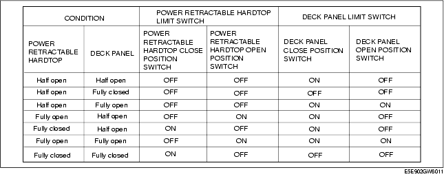

Troubleshooting ➭ BODY & ACCESSORIES ➭ DTC B294F [POWER RETRACTABLE HARDTOP]
DTC B294F [POWER RETRACTABLE HARDTOP]
id0902j2861800
{: #wp1059779}
|
Power retractable hardtop/deck panel limit switch malfunction {: #wp1059842} |
|
|---|---|
|
DETECTION CONDITION {: #wp1059782} |
• There is a discrepancy in the signals from each limit switch. {: #wp1059784} |
|
POSSIBLE CAUSE {: #wp1059857} |
• Foreign material caught in mechanism {: #wp1059860} • Power retractable hardtop/deck panel limit switch malfunction {: #wp1059929} • Open or short circuit in wiring harness between power retractable hardtop/deck panel limit switch and power retractable hardtop control module {: #wp1059941} |
|
{: #wp1059864} |
|
Diagnostic procedure
|
STEP {: #wp1060079} |
INSPECTION {: #wp1060081} |
ACTION {: #wp1060085} |
|
|---|---|---|---|
|
1 {: #wp1059973} |
FOREIGN MATERIAL INSPECTION} • Is there any malfunction which stops the motor mechanically? {: #wp1060187 |
Yes {: #wp1060031} |
Go to the next step. {: #wp1060034} |
|
No {: #wp1060114} |
Remove foreign material. {: #wp1060117} |
||
|
2 {: #wp1060121} |
INSPECT THE POWER RETRACTABLE HARDTOP/DECK PANEL LIMIT SWITCH (See } • Turn the ignition switch to the LOCK position. {: #wp1060233} • Disconnect the negative battery cable. {: #wp1060247} • Inspect the power retractable hardtop/deck panel limit switch. {: #wp1060257POWER RETRACTABLE HARDTOP LIMIT SWITCH INSPECTION.) {: #wp1060269} (See DECK PANEL LIMIT SWITCH INSPECTION.) {: #wp1060283} • Is the power retractable hardtop/deck panel limit switch normal? {: #wp1060297} |
Yes {: #wp1060127} |
Go to the next step. {: #wp1060130} |
|
No {: #wp1060140} |
Replace the power retractable hardtop/deck panel limit switch. {: #wp1060143} (See POWER RETRACTABLE HARDTOP LIMIT SWITCH REMOVAL/INSTALLATION.) {: #wp1060331} (See DECK PANEL LIMIT SWITCH REMOVAL/INSTALLATION.) {: #wp1060345} |
||
|
3 {: #wp1060147} |
INSPECT THE WIRING HARNESS BETWEEN POWER RETRACTABLE HARDTOP CONTROL MODULE AND POWER RETRACTABLE HARDTOP/DECK PANEL LIMIT SWITCH} • Disconnect the power retractable hardtop/deck panel limit switch connector. {: #wp1060408} • Disconnect the power retractable hardtop control module connector. {: #wp1060424} • Inspect the following wiring harnesses for an open or short circuit. {: #wp1060434} - Between power retractable hardtop control module connector terminal 1T and power retractable hardtop limit switch connector terminal A, and between power retractable hardtop control module connector terminal 1V and power retractable hardtop limit switch connector terminal B {: #wp1060444}- Between power retractable hardtop control module connector terminal 1R and power retractable hardtop limit switch connector terminal C, and between power retractable hardtop control module connector terminal 1V and power retractable hardtop limit switch connector terminal D {: #wp1060458}- Between power retractable hardtop control module connector terminal 3F and deck panel limit switch connector terminal A, and between power retractable hardtop control module connector terminal 1V and deck panel limit switch connector terminal B {: #wp1060468}- Between power retractable hardtop control module connector terminal 3O and deck panel limit switch limit switch connector terminal C, and between power retractable hardtop control module connector terminal 1V and deck panel limit switch connector terminal D {: #wp1060478} • Is the wiring harness normal? {: #wp1060488 |
Yes {: #wp1060153} |
Go to the next step. {: #wp1060156} |
|
No {: #wp1060363} |
Repair or replace the related wiring harness. {: #wp1060366} |
||
|
4 {: #wp1060516} |
INSPECT THE LIMIT SWITCH (See } • Using the M-MDS, verify the following PID/DATA monitor. {: #wp1060586PID/DATA MONITOR TABLE [POWER RETRACTABLE HARDTOP].) {: #wp1060603} - RHT_OP {: #wp1060617}- RHT_CL {: #wp1060633}- DECK_OP {: #wp1060645}- DECK_CL {: #wp1060657} • Are the ON/OFF combinations of the open/close switches as shown in Fig.1? {: #wp1060669} (See Fig.1.) {: #wp1060683} |
Yes {: #wp1060522} |
Clear the DTC and perform the DTC inspection again. {: #wp1060525} • If the malfunction recurs, replace the power retractable hardtop control module. {: #wp1060707} (See POWER RETRACTABLE HARDTOP CONTROL MODULE REMOVAL/INSTALLATION.) {: #wp1060721} |
|
No {: #wp1060543} |
Replace the middle roof panel or deck panel link. {: #wp1060546} *Note*{: #wp1060745} • The roof motor link is integrated with the middle roof panel. {: #wp1063318} (See MIDDLE ROOF PANEL REMOVAL/INSTALLATION.) {: #wp1060763} (See DECK PANEL DISASSEMBLY/ASSEMBLY.) {: #wp1060777} |
||
Fig.1
